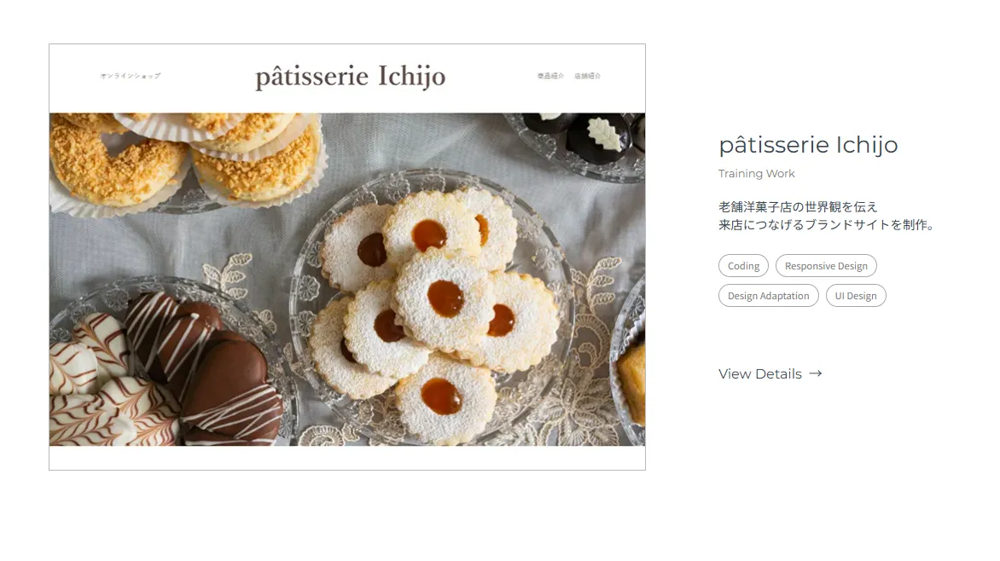
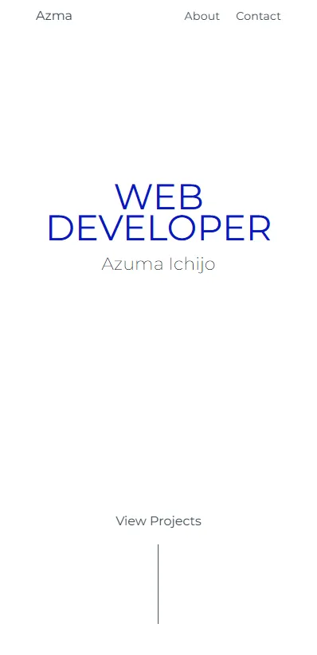
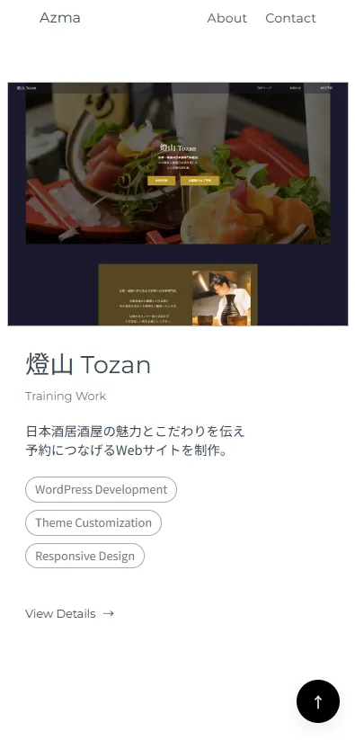
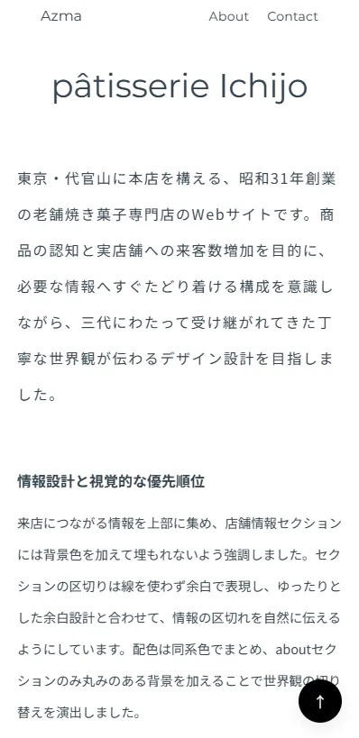

サイトを見る →
Portfolio
クライアントに向けて制作の思考とできることを伝えるために制作した、自身のポートフォリオサイトです。作品の見せ方だけでなく、閲覧体験そのものもひとつのデザインと捉え、細部まで意図を持って設計しました。
情報の取捨選択と視線の流れ
作品に集中できる画面を目指し、Works一覧では見出しをあえて配置せず、視線が作品や本文へ自然に向かうよう設計しています。また、余白や文字組みを調整することで情報のまとまりを整理し、装飾に頼らず内容が伝わる構成を意識しました。一方で、情報を減らしすぎると使いづらさにつながる可能性もあるため、シンプルさとわかりやすさのバランスを探りながら制作を進めました。
次を見たくなる導線
ファーストビューは自己紹介だけで終わらないよう、「View Project」を配置して作品一覧への入口として機能させています。スクロールを促す装飾ではなく、次に見てほしい場所を明確に示す導線として設計しました。また、詳細ページ下部には複数の作品サムネイルを並べ、閲覧後に自然と次の作品へ興味が向く構成を採用しています。単にページを移動させるのではなく、次の作品を見たくなる流れをつくることを意識しました。




More Works